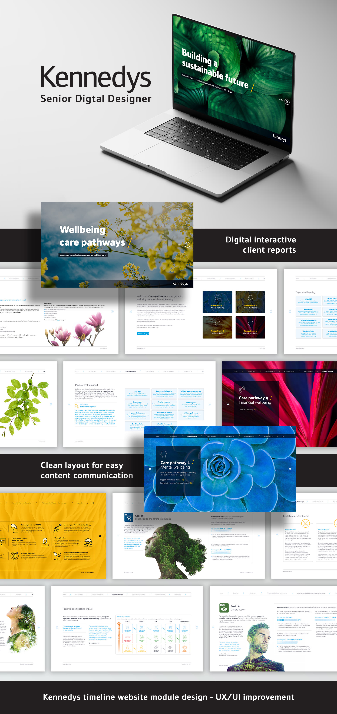

Joining Kennedys Law LLP as Senior Brand & Digital Designer, I was brought in to elevate the creative function to match the firm's global standing. The challenge was to formalise design processes, strengthen brand cohesion, and build the infrastructure needed to scale creative efficiently across a rapidly growing international organisation.
I approached this as a systemic challenge. I overhauled brand cohesion across all channels, introduced a formal design request process, implemented a digital asset management system, developed a social media strategy that measurably improved performance, and built an in-house video and motion pipeline that replaced external studio dependency. I also streamlined the design system and built a modular template library that empowered non-designers to produce on-brand materials independently, freeing the creative team to focus on senior-level work.

Kennedys had no video or motion capability when I arrived. I built it from scratch, establishing an end-to-end production pipeline that brought previously outsourced studio work in-house. The result was faster turnarounds, tighter brand consistency, and a creative output that now directly supports the firm's most high-profile campaigns, global partner events, and business development pitches across international markets.
What started as a brief to improve visual output became something more significant, the establishment of a fully functioning, strategically-led creative department within one of the world's leading law firms. The work I built at Kennedys isn't dependent on any one individual. The systems, guidelines, and production pipelines I designed are now embedded across the organisation, used daily by teams across multiple territories.
This is what senior design leadership looks like in a professional services context: not just producing great work, but building the infrastructure, culture, and capability that raises the quality of everything around it. Stakeholders who once questioned the value of in-house creative now champion it. Partners who once approved designs reluctantly now brief the team proactively. The creative function has moved from a cost centre to a recognised driver of business development and brand equity.